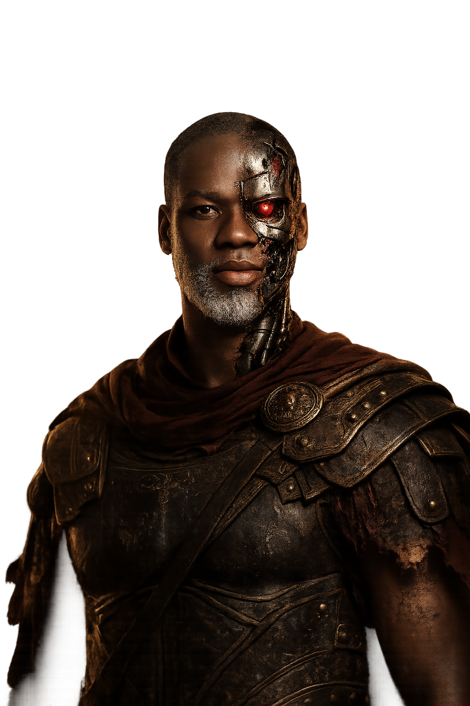

Coding
Frontend website work and digital experiences built with structure, mood, and motion.
Divine Obiekwe Makuochukwu | Anambra
Creative Developer | Graphic Designer | Video Editor | Photographer
I'm Divine Obiekwe Makuochukwu, the creative behind Buggram, blending coding, graphic design, video editing, photography, and content writing into bold digital experiences.


About
My name is Divine Obiekwe Makuochukwu, a creative from Anambra building my future through design, code, motion, photography, and storytelling.
My journey started in secondary school, making shadow-box style pieces from carton packs, A4 paper, glass, and whatever I could shape with my hands before I moved into digital design and started learning with CorelDRAW.
Today I work across coding, graphic design, video editing, photography, and content writing while growing through personal projects, volunteer work at UNIZIK FM, and real responsibility in everyday life.
What I Do
I work across visual and digital media, combining technical skill with creative direction to build designs, edits, written content, photographs, and web experiences that connect with people.
Frontend website work and digital experiences built with structure, mood, and motion.
Brand visuals, layouts, and graphic concepts shaped by strong composition and clean presentation.
Motion-focused edits built around rhythm, emotion, pacing, and visual storytelling.
Image-making that captures moments, atmosphere, detail, and visual character.
Writing shaped to communicate ideas clearly, creatively, and with purpose.
Projects
Featured Project
A personal portfolio designed and built to showcase my identity, skills, and creative direction through code, motion, and visual storytelling.
Design
A growing collection of design works exploring branding, layouts, visual concepts, and digital creativity.
Motion
Edited visual pieces focused on storytelling, mood, pacing, and clean presentation.
Photography
A developing collection of photographs capturing atmosphere, details, and everyday visual stories.
Writing
Written work shaped to explain, persuade, and express ideas with clarity and feeling.
Experience
Volunteer creative and media support, gaining hands-on experience in communication and media work.
Building personal projects in design, code, editing, writing, and photography through Buggram.
Working at a carwash in school while building my creative future with discipline, resilience, and responsibility.
Contact
I'm open to freelance work, collaborations, creative roles, and media opportunities in design, video editing, photography, writing, and digital projects.